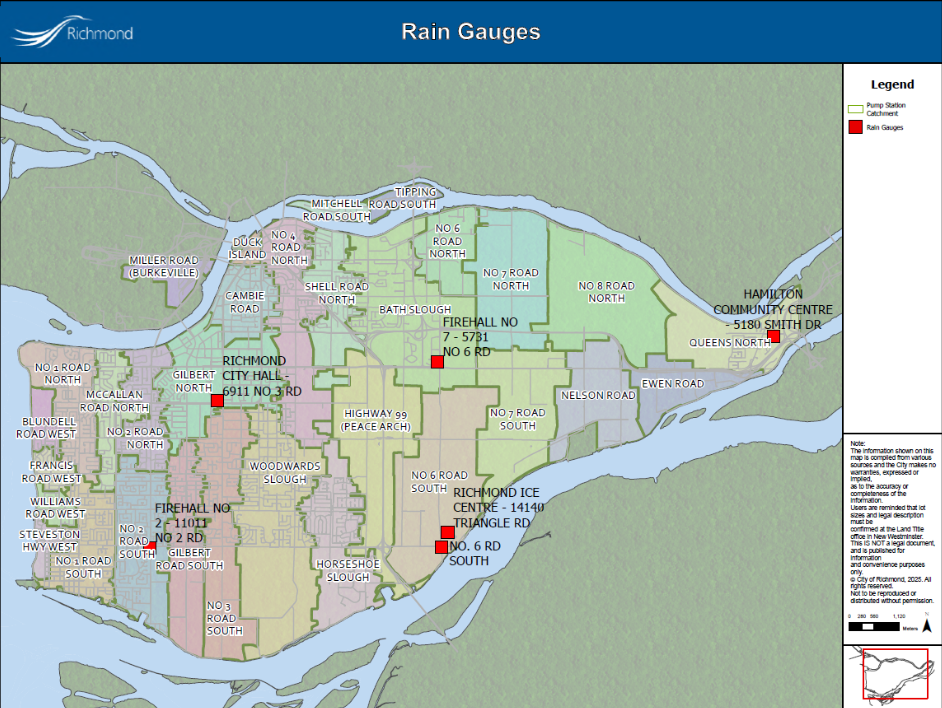

I'm a GIS technician and recent graduate of the Advanced Diploma in Geographic Information Systems at BCIT, with hands-on experience supporting infrastructure and asset management projects. During my practicum with the City of Richmond’s Engineering & Public Works department, I worked extensively with ArcGIS Pro, ArcMap, and Infor Public Sector to update and maintain municipal utility datasets, including stormwater, sanitary, water, and street lighting systems. I bring a strong foundation in spatial analysis, data cleaning, and QA/QC, along with technical skills in SQL, Python, and cartographic design. With a background in English Literature from UBC and several years of experience in music instruction and customer-facing roles, I combine analytical thinking with communication and creative problem-solving. I'm particularly interested in using GIS to support sustainable planning, infrastructure improvement, and public engagement.

This is an app I created at BCIT. Using Experience Builder, the app allows users to report crime and incidents in their areas, as well as look at crime data trends in the form of an index from 1-10.

Here is a map I created for the City of Richmond, showing the locations of rain gauges across the city. This map was used to support infrastructure planning and environmental monitoring.